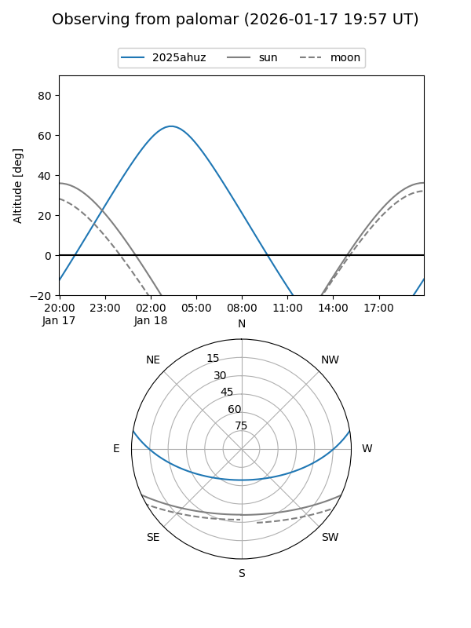
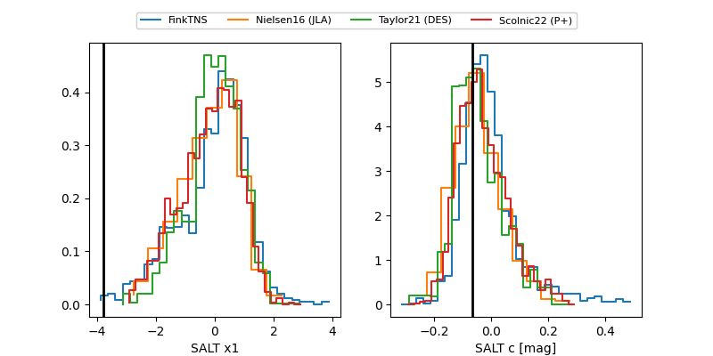

2025ahuz
Target 2025ahuz at 2025-12-30 16:29
Aliases and brokers:
FINK: fink-portal.org/ZTF25acjglgj
Lasair: lasair-ztf.lsst.ac.uk/objects/ZTF25acjglgj
ALeRCE: alerce.online/object/ZTF25acjglgj
TNS: wis-tns.org/object/2025ahuz
YSE: ziggy.ucolick.org/yse/transient_detail/2025ahuz
alt names
ZTF25acjglgj (ztf,fink_ztf)
2025ahuz (tns,yse)
Coordinates:
equatorial (ra, dec) = 50.5570,+7.82815
equatorial (HMS+DMS) = 03:22:13.69,+07:49:41.34
galactic (l, b) = (174.6188,-39.45963)
Flags:
Photometry:
last ztfg=18.75, ztfr=18.39
2 ztfg, 3 ztfr detections
Lightcurve

Visibility


Additional plots
